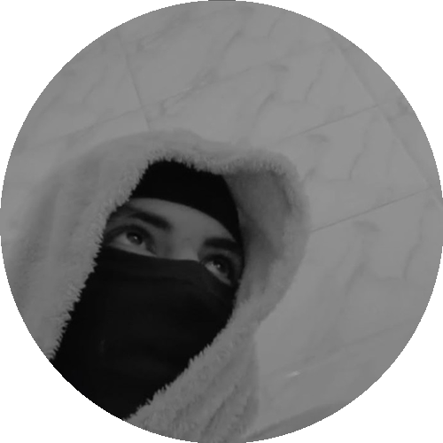

أعمل في مجال تطوير الويب منذ أكثر من خمس سنوات، وأحب بناء مواقع وتطبيقات سريعة وسهلة الاستخدام. عملت مع فرق مختلفة على مشاريع تجارية وشخصية، وأسعى دائماً لتعلّم أدوات وتقنيات جديدة تجعل عملي أفضل.
هدفي المهني القادم هو الانضمام إلى فريق تقني طموح أستطيع من خلاله تطوير مهاراتي في الواجهات الأمامية والخلفية معاً، والمساهمة في بناء منتجات تصل لعدد أكبر من المستخدمين.